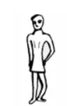

Rune Grimoire
Berkanan
Modern Relevance
Berkano represents the birch tree, associated with boundaries, wisdom, and growth. It signals positive changes and the manifestation of learned lessons.
Tree, Element, and Deity
Tree: birch
Element: earth
Deity: Nerthus
Meaning: regeneration; the breasts of the Earth Goddess
Names Across Dialects
| Dialect | Word | Meaning |
|---|---|---|
| Proto-Germanic | berkano | Birch goddess |
| Gothic | bairkan | Birch twig |
| Old English | beorc | Birch tree |
| Old Norse | bjarkan | Runic birch goddess (from ON björk: birch) |
| Icelandic | Bjarkan | Birch |
| Norwegian | Bjarkan | Birch |
Phonetic value: b
Esoteric interpretation: the numen of the birch as earth mother
Ideographic interpretation: breasts of the earth mother
The Mystery of the Great Mother
The B-rune contains the complex mystery of the great mother. In its cosmological aspect it is the mother of all manifestation and embodies the mysteries of cosmic and human birth and rebirth.
Berkano rules over the four pivotal human rites of passage, which take place at the crucial times of birth, adolescence, marriage, and death. This birch goddess also displays the darker side of the "Terrible Mother," ruling over death. In Norse mythology she is represented by Hel.
Nerthus and the Earth Mother Cult
Tacitus reports on the goddess Nerthus as the earth mother. In this cult, the goddess is attended by a priest and drawn throughout the territory in her chariot, spreading blessings of peace and fertility. When the procession is at an end, Nerthus receives sacrifice in order to replenish her spent power.
The Container of All Becoming
The B-rune is the container of all becoming and being. It is the unity of the birth-life-death-rebirth cycle through the "mystery of the moment." This is the "unit of evolution": that moment of being (a single complete cycle of arising, becoming, passing-away to new arising) from which all becoming is built. The phenomenon of chance in nature is described by this rune, because each moment, each of these units of existence has its own uniqueness, although they are all held together by a universal pattern.
Berkano is the passive receptor and the conserving protective force. It conceals and protects. The B-rune rules over all protective or concealing enclosures such as caves, lodges, or the initiatory "earth houses" (Old Norse jardhhús).
Rune Character
This rune can be used in workings for female fertility, feminine magick, and nurturing. It is used in concealment and protection. This rune symbolizes feminine energies. It is an old Pagan custom to enclose a child at birth with the protective energies of Berkano, which remain with them throughout their life.
Keywords
- Earth mother
- Birth
- Birth-life-death cycle
- Containment
- Moment
Galdr
berkano berkano berkano
bu ba bi be bo
burk bark birk berk bork
ob eb ib ab ub
Stadha
Stand erect with the left arm bent at the elbow, the palm resting on the hip. The left leg is bent at the knee with the heels touching. The left foot is set at a 90-degree angle to the right foot. The elbow and knee form the angles of the B-rune.

Magickal Workings
- Rebirth in the spirit
- Strengthens the power of secrecy
- Works of concealment and protection
- To contain and hold other powers together
- Realization of the oneness of the moment as the mother of all things
- Bringing ideas to fruition in the creative process
- Female fertility and feminine magick
- Nurturing workings
Constructive Applications
Used in workings for female fertility, feminine magick, and nurturing. Used in concealment and protection. Symbolizes feminine energies. Traditionally used to enclose a child at birth with protective energies that remain throughout their life.